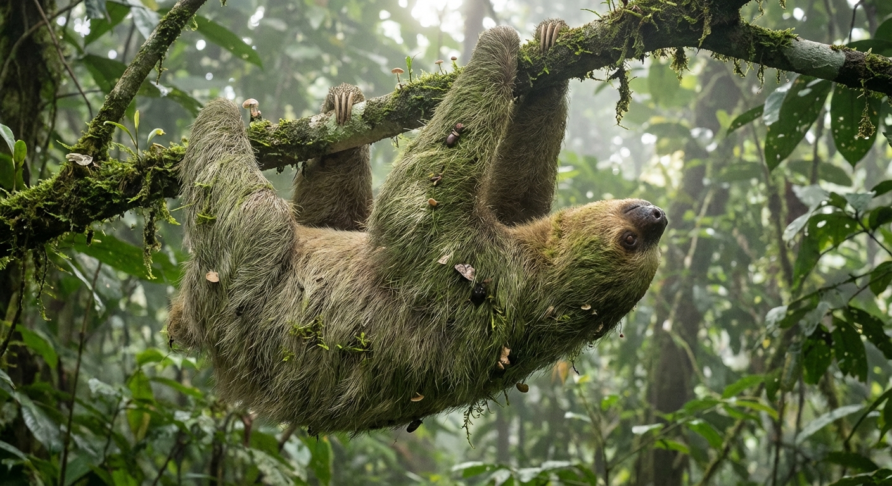

树懒身上那层绿，不只是伪装——它背着一整个会呼吸的小生态系统
我们平时说“树懒身上长青苔”，好像是在笑它太慢、太懒。可认真看资料以后会发现，树懒背上的那层绿，根本不是“脏了懒得洗”，而更像是一整套住在毛里的小社区。
树懒的毛发结构能挂住水分，对藻类、真菌、小节肢动物来说，几乎像一栋移动公寓。它不是单独一只动物，而更像一棵会慢慢挪动的“树”。
研究还提出了一个迷人的三方关系：树懒毛里的蛾越多，毛发中的无机氮浓度越高，藻类生物量也越高。也就是说，树懒那件最费解的事——明明在树上很安全，却偏要慢吞吞下地拉屎——也许和维持背上的住客系统有关。
最妙的是，树懒不是“因为慢所以发绿”这么简单，而是慢本身让它有机会成为别的生命的栖息地。它不是单独活着，而是在背着一个微型岛屿穿过雨林。
BBC Future (2019) · National Geographic · Proceedings of the Royal Society B (2014) · Biological Reviews (2021)